| Shaw Prize | |
|---|---|
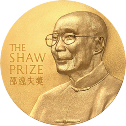 The obverse of the Shaw Prize medal | |
| Awarded for | Outstanding contributions in astronomy, life science and medicine, and mathematical sciences |
| Reward | USD$1.2 million |
| First award | 2004 |
| Website | www |
{kind=link}
{kind=link}
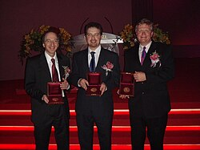
The Shaw Prize is a set of three annual awards presented by the Shaw Prize Foundation in the fields of astronomy, medicine and life sciences, and mathematical sciences. Established in 2002 in Hong Kong,[1] by Hong Kong entertainment mogul and philanthropist Run Run Shaw (邵逸夫),[2] the awards honour "individuals who are currently active in their respective fields and who have recently achieved distinguished and significant advances, who have made outstanding contributions in academic and scientific research or applications, or who in other domains have achieved excellence."[3] The prize has been described as the "Nobel of the East".[4][5][6][7]
Award
The prize consists of three awards in the fields of astronomy, life science and medicine, and mathematical sciences; it is not awarded posthumously. Nominations are submitted by invited individuals beginning each year in September. Winners are announced in the summer and receive the award at a ceremony in early autumn. Each award consists of a gold medal, a certificate and USD$1.2 million (US$1 million before 2015). The front of the medal bears a portrait of Shaw and the name of the prize in English and Traditional Chinese characters; the back bears the year, category, laureate's name and a quotation from the Chinese philosopher Xunzi "制天命而用之" (translated to English as "Grasp the law of nature and make use of it").[8]
As of 2022, there have been 99 Shaw Laureates.[9] 16 Nobel laureates - Jules A. Hoffmann, Bruce Beutler, Saul Perlmutter, Adam Riess, Shinya Yamanaka, Robert Lefkowitz, Brian Schmidt, Jeffrey C. Hall, Michael Rosbash, Michael W. Young, Kip Thorne, Rainer Weiss, Jim Peebles, Michel Mayor, Reinhard Genzel, and David Julius - are Shaw Laureates. The inaugural laureate of the Shaw Prize in Astronomy was Jim Peebles, honored for his contributions to cosmology. Two inaugural prizes were awarded for the Shaw Prize in Life Science and Medicine: Stanley Norman Cohen, Herbert Boyer and Yuet Wai Kan jointly won one of them for their research in DNA while physiologist Richard Doll won the other for his contribution to cancer epidemiology. Shiing-Shen Chern was awarded the inaugural Shaw Prize in Mathematical Sciences for his work on differential geometry.
Shaw Laureates
Astronomy
| Year | Portrait | Laureate[a] | Country[b] | Rationale[c] |
|---|---|---|---|---|
| 2004 | 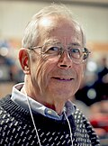 |
P. James E. Peebles | United States | For his groundbreaking contribution to cosmology. He laid the foundations for almost all modern investigations in cosmology, both theoretical and observational, transforming a highly speculative field into a precision science.[10][11] |
| 2005 | 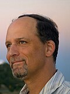 |
Geoffrey Marcy | United States | For finding and characterizing the orbits and masses of the first planets around other stars, thereby revolutionizing our understanding of the processes that form planets and planetary systems.[12][13] |
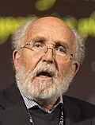 |
Michel Mayor | |||
| 2006 | Saul Perlmutter | United States | For discovering that the expansion rate of the universe is accelerating, implying in the simplest interpretation that the energy density of space is non-vanishing even in the absence of any matter and radiation.[14][15] | |
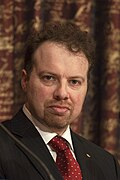 |
Adam Riess | United States | ||
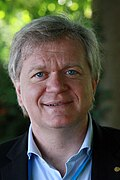 |
Brian Schmidt | |||
| 2007 | 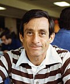 |
Peter Goldreich | United States | In recognition of his lifetime achievements in theoretical astrophysics and planetary sciences.[16][17] |
| 2008 | Reinhard Genzel | 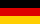 Germany |
In recognition of his outstanding contributions in demonstrating that the Milky Way contains a supermassive black hole at its centre.[18][19] | |
| 2009 | 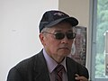 |
Frank H. Shu (徐遐生) | United States | In recognition of his outstanding life-time contributions in theoretical astronomy.[20][21] |
| 2010 | 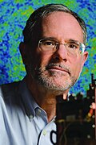 |
Charles L. Bennett | United States | For their leadership of the Wilkinson Microwave Anisotropy Probe (WMAP) experiment, which has enabled precise determinations of the fundamental cosmological parameters, including the geometry, age and composition of the universe.[22][23] |
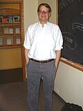 |
Lyman A. Page Jr. | United States | ||
| David N. Spergel | United States | |||
| 2011 | Enrico Costa | Italy | For their leadership of space missions that enabled the demonstration of the cosmological origin of gamma ray bursts, the brightest sources known in the universe.[24][25] | |
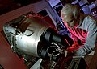 |
Gerald J. Fishman | United States | ||
| 2012 | 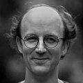 |
David Jewitt | United States | For their discovery and characterization of trans-Neptunian bodies, an archeological treasure dating back to the formation of the Solar System and the long-sought source of short period comets.[26][27] |
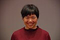 |
Jane Luu | United States | ||
| 2013 | Steven A. Balbus | For their discovery and study of the magnetorotational instability, and for demonstrating that this instability leads to turbulence and is a viable mechanism for angular momentum transport in astrophysical accretion disks.[28][29] | ||

|
John F. Hawley | United States | ||
| 2014 | Daniel Eisenstein | United States | For their contributions to the measurements of features in the large-scale structure of galaxies used to constrain the cosmological model including baryon acoustic oscillations and redshift-space distortions.[30][31] | |
| Shaun Cole | ||||
.jpg)
|
John A. Peacock | |||
| 2015 | 
|
William J. Borucki | United States | For his conceiving and leading the Kepler Mission, which greatly advanced knowledge of both extrasolar planetary systems and stellar interiors.[32][33] |
| 2016 | 
|
Ronald W. P. Drever | For conceiving and designing the Laser Interferometer Gravitational-Wave Observatory (LIGO), whose recent direct detection of gravitational waves opens a new window in astronomy, with the first remarkable discovery being the merger of a pair of stellar mass black holes.[34][35] | |
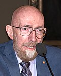 |
Kip S. Thorne | United States | ||
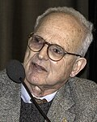 |
Rainer Weiss | United States | ||
| 2017 | 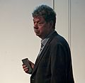 |
Simon D. M. White | Germany | For his contributions to understanding structure formation in the Universe. With powerful numerical simulations he has shown how small density fluctuations in the early Universe develop into galaxies and other nonlinear structures, strongly supporting a cosmology with a flat geometry, and dominated by dark matter and a cosmological constant.[36][37] |
| 2018 | Jean-Loup Puget | For his contributions to astronomy in the infrared to submillimetre spectral range. He detected the cosmic far-infrared background from past star-forming galaxies, and proposed aromatic hydrocarbon molecules as a constituent of interstellar matter. With the Planck space mission, he has dramatically advanced our knowledge of cosmology in the presence of interstellar matter foregrounds.[38][39] | ||
| 2019 | 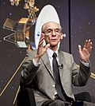 |
Edward C. Stone | United States | For his leadership in the Voyager project, which has, over the past four decades, transformed our understanding of the four giant planets and the outer Solar System, and has now begun to explore interstellar space.[40][41] |
| 2020 | 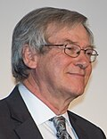 |
Roger D. Blandford | United States | For his foundational contributions to theoretical astrophysics, especially concerning the fundamental understanding of active galactic nuclei, the formation and collimation of relativistic jets, the energy extraction mechanism from black holes, and the acceleration of particles in shocks and their relevant radiation mechanisms.[42][43] |
| 2021 | .jpg)
|
Victoria M. Kaspi | For their contributions to our understanding of magnetars, a class of highly magnetized neutron stars that are linked to a wide range of spectacular, transient astrophysical phenomena. Through the development of new and precise observational techniques, they confirmed the existence of neutron stars with ultra-strong magnetic fields and characterized their physical properties. Their work has established magnetars as a new and important class of astrophysical objects.[44][45] | |

|
Chryssa Kouveliotou | United States | ||
| 2022 | 
|
Lennart Lindegren | 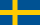 Sweden |
For their lifetime contributions to space astrometry, and in particular for their role in the conception and design of the European Space Agency's Hipparcos and Gaia missions.[46][47] |
| Michael Perryman | Ireland | |||
| 2023 | 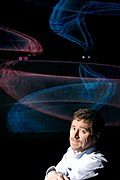 |
Matthew Bailes | For the discovery of fast radio bursts (FRBs).[48] | |
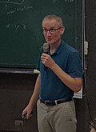 |
Duncan Lorimer | United States | ||
| Maura McLaughlin | United States | |||
| 2024 | 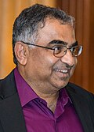 |
Shrinivas R. Kulkarni | United States | For his ground-breaking discoveries about millisecond pulsars, gamma-ray bursts, supernovae, and other variable or transient astronomical objects |
| 2025 | 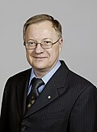 |
John Richard Bond | For their pioneering research in cosmology, in particular for their studies of fluctuations in the cosmic microwave background. Their predictions have been verified by an armada of ground-, balloon- and space-based instruments, leading to precise determinations of the age, geometry, and mass-energy content of the universe.[49] | |
| George Efstathiou | ||||
| 2026 | Ken'ichi Nomoto | For their studies of stellar explosions and the origin of the elements. [50] | ||
| Stanford Woosley | United States |
.jpg){kind=link}
{kind=link}
.jpeg){kind=link}
.jpg){kind=link}
{kind=link}
{kind=link}
{kind=link}
{kind=link}
{kind=link}
{kind=link}
{kind=link}
{kind=link}
_9127922.jpg){kind=link}
{kind=link}
{kind=link}
{kind=link}
.jpg){kind=link}
.jpg){kind=link}
{kind=link}
.jpg){kind=link}
.jpg){kind=link}
.jpg){kind=link}
{kind=link}
{kind=link}
.jpg){kind=link}
Life science and medicine
| Year | Portrait | Laureate[a] | Country[b] | Rationale[c] |
|---|---|---|---|---|
| 2004[d] | 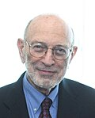 |
Stanley N. Cohen | United States | For their discoveries on DNA cloning and genetic engineering.[11][51] |

|
Herbert W. Boyer | United States | ||
| Yuet-Wai Kan | United States | For his discoveries on DNA polymorphism and its influence on human genetics.[11][51] | ||
| 2004[d] | 
|
Richard Doll | For his contribution to modern cancer epidemiology.[11][51] | |
| 2005 | Michael Berridge | For his discoveries on calcium signalling in the regulation of cellular activity.[52][53] | ||
| 2006 | Xiaodong Wang | United States | For his discovery of the biochemical basis of programmed cell death, a vital process that balances cell birth and defends against cancer.[54][55] | |
| 2007 | .jpg)
|
Robert Lefkowitz | United States | For his relentless elucidation of the major receptor system that mediates the response of cells and organs to drugs and hormones.[56][57] |
| 2008[e] | Keith H. S. Campbell | For their recent pivotal innovations in reversing the process of cell differentiation in mammals, a phenomenon which advances our knowledge of developmental biology and holds great promise for the treatment of human diseases and improvements in agriculture practices.[58][59] | ||
| Ian Wilmut | ||||

|
Shinya Yamanaka | |||
| 2009 | Douglas L. Coleman | United States | For their work leading to the discovery of leptin, a hormone that regulates food intake and body weight.[60][61] | |
| Jeffrey M. Friedman | United States | |||
| 2010 | 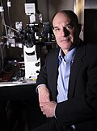 |
David Julius | United States | For his seminal discoveries of molecular mechanisms by which the skin senses painful stimuli and temperature and produces pain hypersensitivity.[62][63] |
| 2011 | Jules A. Hoffmann | For their discovery of the molecular mechanism of innate immunity, the first line of defense against pathogens.[64][65] | ||
| Ruslan M. Medzhitov | United States | |||
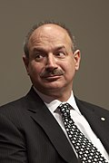 |
Bruce A. Beutler | United States | ||
| 2012 | Franz-Ulrich Hartl | Germany | For their contributions to the understanding of the molecular mechanism of protein folding. Proper protein folding is essential for many cellular functions.[66][67] | |
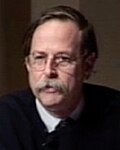 |
Arthur L. Horwich | United States | ||
| 2013 | .jpg)
|
Jeffrey C. Hall | United States | For their discovery of molecular mechanisms underlying circadian rhythms.[68][69] |
.jpg)
|
Michael Rosbash | United States | ||
.jpg)
|
Michael W. Young | United States | ||
| 2014 | 
|
Kazutoshi Mori | For their discovery of the Unfolded Protein Response of the endoplasmic reticulum, a cell signalling pathway that controls organelle homeostasis and quality of protein export in eukaryotic cells.[70][71] | |

|
Peter Walter | United States | ||
| 2015 | Bonnie L. Bassler | United States | For elucidating the molecular mechanism of quorum sensing, a process whereby bacteria communicate with each other and which offers innovative ways to interfere with bacterial pathogens or to modulate the microbiome for health applications.[72][73] | |
| E. Peter Greenberg | United States | |||
| 2016 | 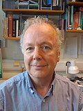 |
Adrian P. Bird | For their discovery of the genes and the encoded proteins that recognize one chemical modification of the DNA of chromosomes that influences gene control as the basis of the developmental disorder Rett syndrome.[74][75] | |
| Huda Y. Zoghbi | United States | |||
| 2017 | 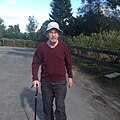 |
Ian R. Gibbons | United States | For their discovery of microtubule-associated motor proteins: engines that power cellular and intracellular movements essential to the growth, division, and survival of human cells.[76][77] |
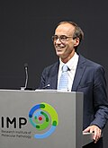 |
Ronald D. Vale | United States | ||
| 2018 | Mary-Claire King | United States | For her mapping the first breast cancer gene. Using mathematical modeling, King predicted and then demonstrated that breast cancer can be caused by a single gene. She mapped the gene which facilitated its cloning and has saved thousands of lives.[78][79] | |
| 2019 | Maria Jasin | United States | For her work showing that localized double strand breaks in DNA stimulate recombination in mammalian cells. This seminal work was essential for and led directly to the tools enabling editing at specific sites in mammalian genomes.[80][81] | |
| 2020 | Gero Miesenböck | For the development of optogenetics, a technology that has revolutionized neuroscience.[82][83] | ||
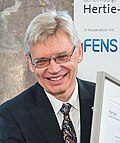 |
Peter Hegemann | Germany | ||
| Georg Nagel | Germany | |||
| 2021 | 
|
Scott D. Emr | United States | For the landmark discovery of the ESCRT (Endosomal Sorting Complex Required for Transport) pathway, which is essential in diverse processes involving membrane biology, including cell division, cell-surface receptor regulation, viral dissemination, and nerve axon pruning. These processes are central to life, health and disease.[84][85] |
| 2022 | Paul A. Negulescu | United States | For landmark discoveries of the molecular, biochemical, and functional defects underlying cystic fibrosis and the identification and development of medicines that reverse those defects and can treat most people affected by this disorder. Together, these discoveries and medicines are alleviating human suffering and saving lives.[86][87] | |
| Michael J. Welsh | United States | |||
| 2023 | 
|
Patrick Cramer | Germany | For pioneering structural biology that enabled visualisation, at the level of individual atoms, of the protein machines responsible for gene transcription, one of life's fundamental processes. They revealed the mechanism underlying each step in gene transcription, how proper gene transcription promotes health, and how dysregulation causes disease.[48] |
| Eva Nogales | Spain & United States | |||
| 2024 | Stuart H. Orkin | United States | For their discovery of the genetic and molecular mechanisms underlying the fetal-to-adult hemoglobin switch, making possible a revolutionary and highly effective genome-editing therapy for sickle cell anemia and β thalassemia, devastating blood diseases that affect millions of people worldwide. | |

|
Swee Lay Thein | United States | ||
| 2025 | 
|
Wolfgang Baumeister | Germany | For his pioneering development and use of cryogenic-electron tomography (cryo-ET), an imaging technique that enables three-dimensional visualisation of biological samples, including proteins, macromolecular complexes, and cellular compartments as they exist in their natural cellular settings.[49] |
| 2026 | 
|
Anne Dejean | For the discovery of the molecular and cellular bases of acute promyelocytic leukemia and the pioneering of a synergistic targeted therapy that transformed the disease from one of the most deadly to one of the most curable cancers. [50] | |
| Hugues de Thé | ||||
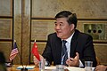 |
Chen Zhu |
{kind=link}
{kind=link}
{kind=link}
{kind=link}
{kind=link}
.jpg){kind=link}
.jpg){kind=link}
{kind=link}
{kind=link}
{kind=link}
{kind=link}
{kind=link}
{kind=link}
{kind=link}
{kind=link}
{kind=link}
Mathematical sciences
| Year | Portrait | Laureate[a] | Country[b] | Rationale[c] |
|---|---|---|---|---|
| 2004 | 
|
Shiing-Shen Chern (陳省身) | For his initiation of the field of global differential geometry and his continued leadership of the field, resulting in beautiful developments that are at the centre of contemporary mathematics, with deep connections to topology, algebra and analysis, in short, to all major branches of mathematics of the last sixty years.[88][89] | |
| 2005 | 
|
Andrew John Wiles | For his proof of Fermat's Last Theorem.[90][91] | |
| 2006 | .jpg)
|
David Mumford | United States | For David Mumford's contributions to mathematics, and to the new interdisciplinary fields of pattern theory and vision research; and for Wentsun Wu's contributions to the new interdisciplinary field of mathematics mechanization.[92][93] |
.jpg)
|
Wentsun Wu (吳文俊) | |||
| 2007 | 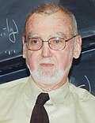 |
Robert Langlands | For initiating and developing a grand unifying vision of mathematics that connects prime numbers with symmetry.[94][95] | |
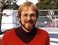 |
Richard Taylor | |||
| 2008 | 
|
Vladimir Arnold | For their widespread and influential contributions to Mathematical Physics.[96][97] | |
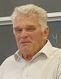 |
Ludwig Faddeev | |||
| 2009 | 
|
Simon K. Donaldson | For their many brilliant contributions to geometry in 3 and 4 dimensions.[98][99] | |
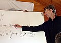 |
Clifford H. Taubes | United States | ||
| 2010 | 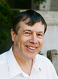 |
Jean Bourgain | For his profound work in mathematical analysis and its application to partial differential equations, mathematical physics, combinatorics, number theory, ergodic theory and theoretical computer science.[100][101] | |
| 2011 | Demetrios Christodoulou | For their highly innovative works on nonlinear partial differential equations in Lorentzian and Riemannian geometry and their applications to general relativity and topology.[102][103] | ||
.jpg)
|
Richard S. Hamilton | United States | ||
| 2012 | 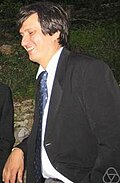 |
Maxim Kontsevich | For his pioneering works in algebra, geometry and mathematical physics and in particular deformation quantization, motivic integration and mirror symmetry.[104][105] | |
| 2013 | _(cropped).jpg)
|
David L. Donoho | United States | For his profound contributions to modern mathematical statistics and in particular the development of optimal algorithms for statistical estimation in the presence of noise and of efficient techniques for sparse representation and recovery in large data-sets.[106][107] |
| 2014 | George Lusztig | United States | For his fundamental contributions to algebra, algebraic geometry, and representation theory, and for weaving these subjects together to solve old problems and reveal beautiful new connections.[108][109] | |
| 2015 | 
|
Gerd Faltings | Germany | For their introduction and development of fundamental tools in number theory, allowing them as well as others to resolve some longstanding classical problems.[110][111] |

|
Henryk Iwaniec | United States | ||
| 2016 | Nigel J. Hitchin | For his far-reaching contributions to geometry, representation theory and theoretical physics. The fundamental and elegant concepts and techniques that he has introduced have had wide impact and are of lasting importance.[112][113] | ||
| 2017 | János Kollár | For their remarkable results in many central areas of algebraic geometry, which have transformed the field and led to the solution of long-standing problems that had appeared out of reach.[114][115] | ||
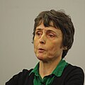 |
Claire Voisin | |||
| 2018 | 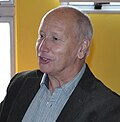 |
Luis A. Caffarelli | Argentina | For his groundbreaking work on partial differential equations, including creating a theory of regularity for nonlinear equations such as the Monge-Ampère equation, and free-boundary problems such as the obstacle problem, work that has influenced a whole generation of researchers in the field.[116][117] |
| 2019 | 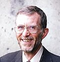 |
Michel Talagrand | For his work on concentration inequalities, on suprema of stochastic processes and on rigorous results for spin glasses.[118][119] | |
| 2020 | 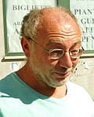 |
Alexander Beilinson | United States | For their huge influence on and profound contributions to representation theory, as well as many other areas of mathematics.[120][121] |

|
David Kazhdan | |||
| 2021 | 
|
Jean-Michel Bismut | For their remarkable insights that have transformed, and continue to transform, modern geometry.[122][123] | |
| Jeff Cheeger | United States | |||
| 2022 | Noga Alon | For their remarkable contributions to discrete mathematics and model theory with interaction notably with algebraic geometry, topology and computer sciences.[124][125] | ||

|
Ehud Hrushovski | |||
| 2023 | Vladimir Drinfeld | United States | For their contributions related to mathematical physics, to arithmetic geometry, to differential geometry and to Kähler geometry.[48] | |
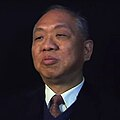 |
Shing-Tung Yau | United States | ||
| 2024 | 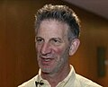 |
Peter Sarnak | United States | For his development of the arithmetic theory of thin groups and the affine sieve, by bringing together number theory, analysis, combinatorics, dynamics, geometry and spectral theory. |
| 2025 | 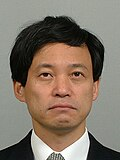 |
Kenji Fukaya | For his pioneering work on symplectic geometry, especially for envisioning the existence of a category — nowadays called the Fukaya category — consisting of Lagrangians on a symplectic manifold, for leading the monumental task of constructing it, and for his subsequent ground-breaking and impactful contributions to symplectic topology, mirror symmetry, and gauge theory.[49] | |
| 2026 | 
|
Emmanuel Candès | For their breakthrough contributions to the use of deep techniques from mathematical analysis to rigorously understand applied problems in information theory, signal processing and statistics on the one hand, and to the study of singularities in geometric measure theory and fluid dynamics on the other.[50] | |

|
Camillo De Lellis | Italy |
.jpg){kind=link}
.jpg){kind=link}
.jpg){kind=link}
{kind=link}
.jpg){kind=link}
.jpg){kind=link}
{kind=link}
{kind=link}
{kind=link}
.jpg){kind=link}
.jpg){kind=link}
.jpg){kind=link}
{kind=link}
.jpg){kind=link}
{kind=link}
See also
- List of general science and technology awards
- List of astronomy awards
- List of mathematics awards
- List of medicine awards
- List of physics awards
Notes
- a The form and spelling of the names according to the Shaw Prize Foundation.
- b Sites of the work places of the Laureates at the time of the award.[126]
- c The rationale from the Shaw Prize Foundation.
- d Two prizes were awarded for the life science and medicine category in 2004: Stanley N. Cohen, Herbert W. Boyer and Yuet-Wai Kan jointly received one of the prizes (half went to Cohen and Boyer; the other half went to Kan). Richard Doll received the other prize.[126]
- e Half of the 2008 life science and medicine prize went to Keith H. S. Campbell and Ian Wilmut; the other half went to Shinya Yamanaka.[59]
References
- ^ "2002年度「邵逸夫獎」新聞發佈會" (in Chinese). Shaw Prize Foundation. 15 November 2002. Archived from the original on 21 September 2022. Retrieved 21 September 2022.
- ^ "The Founder". Shaw Prize Foundation. Archived from the original on 21 September 2022. Retrieved 21 September 2022.
- ^ "About the Shaw Prize". Shaw Prize Foundation. Archived from the original on 21 September 2022. Retrieved 21 September 2022.
- ^ "Jackson Laboratory scientist wins Shaw Prize, "Nobel of the East"". Jackson Laboratory. 16 June 2009. Archived from the original on 26 June 2009. Retrieved 26 June 2009.
- ^ "Berkeley Lab's Saul Perlmutter Wins Shaw Prize in Astronomy". Lawrence Berkeley National Laboratory. 21 June 2006. Archived from the original on 14 August 2017. Retrieved 14 August 2017.
- ^ "$1 million 'Nobel of the East' awarded to Sir Michael Berridge, Emeritus Fellow at the Babraham Institute". Babraham Institute. 18 July 2005. Archived from the original on 25 July 2011. Retrieved 20 November 2009.
- ^ "Solana Beach: Astronomy researcher gets $1 million Shaw Prize". North County Times. 17 June 2009. Archived from the original on 17 January 2010. Retrieved 20 November 2009.
- ^ "Medal & Certificate". Shaw Prize Foundation. Archived from the original on 21 September 2022. Retrieved 21 September 2022.
- ^ "Quick Facts". Shaw Prize Foundation. Archived from the original on 28 September 2022. Retrieved 28 September 2022.
- ^ "The 2004 Prize in Astronomy". Shaw Prize Foundation. Archived from the original on 28 September 2022. Retrieved 28 September 2022.
- ^ a b c d "Shaw Prize awarded to six scientists" (Press release). Government of Hong Kong. 7 September 2004. Archived from the original on 18 September 2004. Retrieved 18 September 2004.
- ^ "The 2005 Prize in Astronomy". Shaw Prize Foundation. Archived from the original on 28 September 2022. Retrieved 28 September 2022.
- ^ Sanders, Robert (1 September 2005). "Planet hunter Geoffrey Marcy shares $1 million Shaw Prize in astronomy". University of California, Berkeley. Archived from the original on 9 September 2005. Retrieved 9 September 2005.
- ^ "The 2006 Prize in Astronomy". Shaw Prize Foundation. Archived from the original on 28 September 2022. Retrieved 28 September 2022.
- ^ "Berkeley physicist Perlmutter wins Shaw Prize for work on expansion of universe". University of California, Berkeley. 22 June 2006. Archived from the original on 25 June 2006. Retrieved 25 June 2006.
- ^ "The 2007 Prize in Astronomy". Shaw Prize Foundation. Archived from the original on 29 September 2022. Retrieved 29 September 2022.
- ^ "Caltech Astrophysicist Peter Goldreich Wins $1 Million International Shaw Prize". California Institute of Technology. 12 June 2007. Archived from the original on 1 June 2010. Retrieved 31 October 2009.
- ^ "The 2008 Prize in Astronomy". Shaw Prize Foundation. Archived from the original on 29 September 2022. Retrieved 29 September 2022.
- ^ "6 Professors to Share $1-Million Shaw Prizes". The Chronicle of Higher Education. 10 June 2008. Archived from the original on 29 September 2022. Retrieved 29 September 2022.
- ^ "The 2009 Prize in Astronomy". Shaw Prize Foundation. Archived from the original on 29 September 2022. Retrieved 29 September 2022.
- ^ "$1-Million Shaw Prizes Go to 5 Researchers". The Chronicle of Higher Education. 16 June 2009. Archived from the original on 29 September 2022. Retrieved 29 September 2022.
- ^ "The 2010 Prize in Astronomy". Shaw Prize Foundation. Archived from the original on 29 September 2022. Retrieved 29 September 2022.
- ^ MacPherson, Kitta (27 May 2010). "Princeton scientists win Shaw Prize for helping map the universe". Princeton University. Archived from the original on 29 September 2022. Retrieved 29 September 2022.
- ^ "The 2011 Prize in Astronomy". Shaw Prize Foundation. Archived from the original on 30 September 2022. Retrieved 30 September 2022.
- ^ "Enrico Costa and Jerry Fishman share Shaw Prize for gamma ray burst research". SPIE. 20 June 2011. Archived from the original on 30 September 2022. Retrieved 30 September 2022.
- ^ "The 2012 Prize in Astronomy". Shaw Prize Foundation. Archived from the original on 30 September 2022. Retrieved 30 September 2022.
- ^ Choi, Christy (19 September 2012). "Q&A: Astronomers Jewitt, Luu on winning Shaw Prize and science as culture". South China Morning Post. Archived from the original on 30 September 2022. Retrieved 30 September 2022.
- ^ "The 2013 Prize in Astronomy". Shaw Prize Foundation. Archived from the original on 30 September 2022. Retrieved 30 September 2022.
- ^ Strauss, Valerie (30 May 2013). "U-Va. astronomer wins $1 million 'Nobel of the East' Prize". The Washington Post. Retrieved 30 September 2022.
{{cite news}}: CS1 maint: deprecated archival service (link) - ^ "The 2014 Prize in Astronomy". Shaw Prize Foundation. Archived from the original on 29 April 2022. Retrieved 30 September 2022.
- ^ "School's Prof. John Peacock is joint recipient of Shaw Prize in Astronomy". University of Edinburgh. 28 May 2014. Archived from the original on 30 September 2022. Retrieved 30 September 2022.
- ^ "The 2015 Prize in Astronomy". Shaw Prize Foundation. Archived from the original on 30 September 2022. Retrieved 30 September 2022.
- ^ Fletcher, Julie (4 June 2015). "Borucki Awarded 2015 Shaw Prize". NASA. Archived from the original on 30 September 2022. Retrieved 30 September 2022.
- ^ "The 2016 Prize in Astronomy". Shaw Prize Foundation. Archived from the original on 30 September 2022. Retrieved 30 September 2022.
- ^ "2016 Shaw Prize Awarded to LIGO Founders". California Institute of Technology. 1 June 2016. Archived from the original on 30 September 2022. Retrieved 30 September 2022.
- ^ "The 2017 Prize in Astronomy". Shaw Prize Foundation. Archived from the original on 30 September 2022. Retrieved 30 September 2022.
- ^ "Shaw Prize for Simon D.M. White". Max Planck Society. 24 May 2017. Archived from the original on 30 September 2022. Retrieved 30 September 2022.
- ^ "The 2018 Prize in Astronomy". Shaw Prize Foundation. Archived from the original on 30 September 2022. Retrieved 30 September 2022.
- ^ "Jean-Loup Puget has been awarded the Shaw Prize". Institut d'astrophysique spatiale. 22 May 2018. Archived from the original on 30 September 2022. Retrieved 30 September 2022.
- ^ "The 2019 Prize in Astronomy". Shaw Prize Foundation. Archived from the original on 30 September 2022. Retrieved 30 September 2022.
- ^ "Shaw Prize in Astronomy Awarded to Ed Stone". NASA. 22 May 2019. Archived from the original on 30 September 2022. Retrieved 30 September 2022.
- ^ "The 2020 Prize in Astronomy". Shaw Prize Foundation. Archived from the original on 30 September 2022. Retrieved 30 September 2022.
- ^ "Professor Roger Blandford awarded The Shaw Prize in Astronomy". University of Cambridge. 14 May 2021. Archived from the original on 30 September 2022. Retrieved 30 September 2022.
- ^ "The 2021 Prize in Astronomy". Shaw Prize Foundation. Archived from the original on 30 September 2022. Retrieved 30 September 2022.
- ^ "Victoria M Kaspi and Chryssa Kouveliotou Receive the 2021 Shaw Prize in Astronomy". International Astronomical Union. Archived from the original on 30 September 2022. Retrieved 30 September 2022.
- ^ "The 2022 Prize in Astronomy". Shaw Prize Foundation. Archived from the original on 30 September 2022. Retrieved 30 September 2022.
- ^ Frid, Emelie (25 May 2022). "Lennart Lindegren is shared recipient of the Shaw Price in Astronomy!". Lund Observatory. Archived from the original on 30 September 2022. Retrieved 30 September 2022.
- ^ a b c "Shaw Prize 2023". Archived from the original on 9 July 2023. Retrieved 30 May 2023.
- ^ a b c Shaw Prize 2025
- ^ a b c "Announcement Press Conference 2026 Press Release". The Shaw Prize. 27 May 2026. Archived from the original on 27 May 2026. Retrieved 27 May 2026.
- ^ a b c "The 2004 Prize in Life Science & Medicine". Shaw Prize Foundation. Archived from the original on 1 October 2022. Retrieved 1 October 2022.
- ^ "The 2005 Prize in Life Science & Medicine". Shaw Prize Foundation. Archived from the original on 1 October 2022. Retrieved 1 October 2022.
- ^ "$1 million 'Nobel of the East' awarded to Sir Michael Berridge, Emeritus Fellow at the Babraham Institute". Babraham Institute. 18 July 2005. Archived from the original on 25 July 2011. Retrieved 31 October 2009.
- ^ "The 2006 Prize in Life Science & Medicine". Shaw Prize Foundation. Archived from the original on 3 October 2022. Retrieved 3 October 2022.
- ^ "Xiaodong Wang Wins $1 Million Shaw Prize". Howard Hughes Medical Institute. 22 June 2006. Archived from the original on 20 April 2015. Retrieved 20 April 2015.
- ^ "The 2007 Prize in Life Science & Medicine". Shaw Prize Foundation. Archived from the original on 3 October 2022. Retrieved 3 October 2022.
- ^ "Shaw Prize In Life Sciences To Lefkowitz". Chemical & Engineering News. Vol. 85, no. 29. 16 July 2007. Archived from the original on 3 October 2022. Retrieved 3 October 2022.
- ^ "The 2008 Prize in Life Science & Medicine". Shaw Prize Foundation. Archived from the original on 3 October 2022. Retrieved 3 October 2022.
- ^ a b "Shinya Yamanaka's Road to the 2012 Nobel Prize in Medicine". University of California, San Francisco. 8 October 2012. Archived from the original on 3 October 2022. Retrieved 3 October 2022.
- ^ "The 2009 Prize in Life Science & Medicine". Shaw Prize Foundation. Archived from the original on 3 October 2022. Retrieved 3 October 2022.
- ^ "Canadian, U.S. scientists win $1M Shaw prize for obesity work". Canadian Broadcasting Corporation. 16 June 2009. Archived from the original on 3 October 2022. Retrieved 3 October 2022.
- ^ "The 2010 Prize in Life Science & Medicine". Shaw Prize Foundation. Archived from the original on 3 October 2022. Retrieved 3 October 2022.
- ^ "Julius Named to Receive the Shaw Prize". University of California, San Francisco. 27 May 2010. Archived from the original on 3 October 2022. Retrieved 3 October 2022.
- ^ "The 2011 Prize in Life Science & Medicine". Shaw Prize Foundation. Archived from the original on 4 October 2022. Retrieved 4 October 2022.
- ^ "Shaw Prize awarded to immunobiologist". Yale Medicine Magazine (2012 Winter). 2012. Archived from the original on 4 October 2022. Retrieved 4 October 2022.
- ^ "The 2012 Prize in Life Science & Medicine". Shaw Prize Foundation. Archived from the original on 4 October 2022. Retrieved 4 October 2022.
- ^ "Horwich and Hartl Awarded Shaw Prize". Howard Hughes Medical Institute. 29 May 2012. Archived from the original on 4 October 2022. Retrieved 4 October 2022.
- ^ "The 2013 Prize in Life Science & Medicine". Shaw Prize Foundation. Archived from the original on 4 October 2022. Retrieved 4 October 2022.
- ^ "Rosbash, Hall and Young awarded Shaw Prize". Brandeis University. 30 May 2013. Archived from the original on 4 October 2022. Retrieved 4 October 2022.
- ^ "The 2014 Prize in Life Science & Medicine". Shaw Prize Foundation. Archived from the original on 5 October 2022. Retrieved 5 October 2022.
- ^ Leuty, Ron (27 May 2014). "Cellular 'life or death' switch nets $1 million prize for UCSF researcher". San Francisco Business Journal. Archived from the original on 5 October 2022. Retrieved 5 October 2022.
- ^ "The 2015 Prize in Life Science & Medicine". Shaw Prize Foundation. Archived from the original on 5 October 2022. Retrieved 5 October 2022.
- ^ "The Shaw Prize awarded to E. Peter Greenberg and Bonnie Bassler (Princeton) in Life Science and Medicine". University of Washington. 17 June 2015. Archived from the original on 5 October 2022. Retrieved 5 October 2022.
- ^ "The 2016 Prize in Life Science & Medicine". Shaw Prize Foundation. Archived from the original on 5 October 2022. Retrieved 5 October 2022.
- ^ Almond, B. J. (31 May 2016). "Trustee Huda Zoghbi wins Shaw Prize". Rice University. Archived from the original on 5 October 2022. Retrieved 5 October 2022.
- ^ "The 2017 Prize in Life Science & Medicine". Shaw Prize Foundation. Archived from the original on 5 October 2022. Retrieved 5 October 2022.
- ^ Sanders, Robert (25 May 2017). "Ian Gibbons awarded Shaw Prize for discovery of molecular motors". University of California, Berkeley. Archived from the original on 5 October 2022. Retrieved 5 October 2022.
- ^ "The 2018 Prize in Life Science & Medicine". Shaw Prize Foundation. Archived from the original on 5 October 2022. Retrieved 5 October 2022.
- ^ "Geneticist Mary-Claire King to receive Shaw Prize in China". University of Washington. 14 May 2018. Archived from the original on 5 October 2022. Retrieved 5 October 2022.
- ^ "The 2019 Prize in Life Science & Medicine". Shaw Prize Foundation. Archived from the original on 5 October 2022. Retrieved 5 October 2022.
- ^ "World-Renowned Molecular Biologist Maria Jasin Wins the Shaw Prize in Life Science and Medicine". Memorial Sloan Kettering Cancer Center. 21 May 2019. Archived from the original on 5 October 2022. Retrieved 5 October 2022.
- ^ "The 2020 Prize in Life Science & Medicine". Shaw Prize Foundation. Archived from the original on 5 October 2022. Retrieved 5 October 2022.
- ^ "Peter Hegemann receives 2020 Shaw Prize". Einstein Center for Neurosciences Berlin. 25 May 2020. Archived from the original on 5 October 2022. Retrieved 5 October 2022.
- ^ "The 2021 Prize in Life Science & Medicine". Shaw Prize Foundation. Archived from the original on 5 October 2022. Retrieved 5 October 2022.
- ^ Blackwood, Kate (1 June 2021). "Emr wins $1.2M Shaw Prize in Life Science and Medicine". Cornell University. Archived from the original on 5 October 2022. Retrieved 5 October 2022.
- ^ "The 2022 Prize in Life Science & Medicine". Shaw Prize Foundation. Archived from the original on 5 October 2022. Retrieved 5 October 2022.
- ^ "Welsh wins 2022 Shaw Prize in Life Sciences and Medicine". Roy J. and Lucille A. Carver College of Medicine, University of Iowa. 25 May 2022. Archived from the original on 5 October 2022. Retrieved 5 October 2022.
- ^ "The 2004 Prize in Mathematical Sciences". Shaw Prize Foundation. Archived from the original on 6 October 2022. Retrieved 6 October 2022.
- ^ Sanders, Robert (6 December 2004). "Renowned mathematician Shiing-Shen Chern, who revitalized the study of geometry, has died at 93 in Tianjin, China". University of California, Berkeley. Archived from the original on 14 April 2009. Retrieved 14 April 2009.
- ^ "The 2005 Prize in Mathematical Sciences". Shaw Prize Foundation. Archived from the original on 6 October 2022. Retrieved 6 October 2022.
- ^ "Institute For Advanced Study Congratulates 2005 Shaw Prize Laureate Andrew Wiles" (Press release). Institute for Advanced Study. 7 June 2005. Archived from the original on 6 October 2022. Retrieved 6 October 2022.
- ^ "The 2006 Prize in Mathematical Sciences". Shaw Prize Foundation. Archived from the original on 6 October 2022. Retrieved 6 October 2022.
- ^ "Mumford and Wu Receive 2006 Shaw Prize" (PDF). Notices of the American Mathematical Society. 53 (9): 1054–1055. 2006. Archived from the original (PDF) on 18 August 2022. Retrieved 18 August 2022.
- ^ "The 2007 Prize in Mathematical Sciences". Shaw Prize Foundation. Archived from the original on 7 October 2022. Retrieved 7 October 2022.
- ^ "Two Faculty Members Named 2007 Shaw Prize Laureates" (Press release). Institute for Advanced Study. 13 June 2007. Archived from the original on 7 October 2022. Retrieved 7 October 2022.
- ^ "The 2008 Prize in Mathematical Sciences". Shaw Prize Foundation. Archived from the original on 7 October 2022. Retrieved 7 October 2022.
- ^ "Arnold and Faddeev Receive 2008 Shaw Prize" (PDF). Notices of the American Mathematical Society. 55 (8): 966. 2008. Archived from the original (PDF) on 7 October 2022. Retrieved 8 October 2022.
- ^ "The 2009 Prize in Mathematical Sciences". Shaw Prize Foundation. Archived from the original on 7 October 2022. Retrieved 7 October 2022.
- ^ "$1 Million Shaw Prize Goes to Simon Donaldson and Clifford Taubes". Mathematical Association of America. 25 June 2009. Archived from the original on 7 October 2022. Retrieved 7 October 2022.
- ^ "The 2010 Prize in Mathematical Sciences". Shaw Prize Foundation. Archived from the original on 7 October 2022. Retrieved 7 October 2022.
- ^ "Jean Bourgain Named 2010 Shaw Prize Laureate in Mathematics". Institute for Advanced Study. 1 June 2010. Archived from the original on 7 October 2022. Retrieved 7 October 2022.
- ^ "The 2011 Prize in Mathematical Sciences". Shaw Prize Foundation. Archived from the original on 7 October 2022. Retrieved 7 October 2022.
- ^ Meyer, Florian (8 June 2011). "ETH Zurich researcher wins "Asia's Nobel Prize"". ETH Zurich. Archived from the original on 7 October 2022. Retrieved 7 October 2022.
- ^ "The 2012 Prize in Mathematical Sciences". Shaw Prize Foundation. Archived from the original on 7 October 2022. Retrieved 7 October 2022.
- ^ Levisen, Christina (7 June 2012). "Maxim Kontsevich awarded The Shaw Prize". Aarhus University. Archived from the original on 7 October 2022. Retrieved 7 October 2022.
- ^ "The 2013 Prize in Mathematical Sciences". Shaw Prize Foundation. Archived from the original on 7 October 2022. Retrieved 7 October 2022.
- ^ Kelly, Morgan (28 May 2013). "Alumnus Donoho receives Shaw Prize in mathematics". Princeton University. Archived from the original on 7 October 2022. Retrieved 7 October 2022.
- ^ "The 2014 Prize in Mathematical Sciences". Shaw Prize Foundation. Archived from the original on 8 October 2022. Retrieved 8 October 2022.
- ^ Schroeder, Bendta (2 June 2014). "George Lusztig awarded the Shaw Prize in Mathematical Sciences". Massachusetts Institute of Technology. Archived from the original on 6 October 2022. Retrieved 8 October 2022.
- ^ "The 2015 Prize in Mathematical Sciences". Shaw Prize Foundation. Archived from the original on 8 October 2022. Retrieved 8 October 2022.
- ^ "Shaw Prize in Mathematical Sciences Awarded to Gerd Faltings". Max Planck Institute for Mathematics. Archived from the original on 8 October 2022. Retrieved 8 October 2022.
- ^ "The 2016 Prize in Mathematical Sciences". Shaw Prize Foundation. Archived from the original on 8 October 2022. Retrieved 8 October 2022.
- ^ "Oxford professor awarded Shaw Prize in Mathematical Sciences". University of Oxford. 31 May 2016. Archived from the original on 8 October 2022. Retrieved 8 October 2022.
- ^ "The 2017 Prize in Mathematical Sciences". Shaw Prize Foundation. Archived from the original on 8 October 2022. Retrieved 8 October 2022.
- ^ "LMS Honorary Member shares 2017 Shaw Prize". London Mathematical Society. Retrieved 8 October 2022.
{{cite news}}: CS1 maint: deprecated archival service (link) - ^ "The 2018 Prize in Mathematical Sciences". Shaw Prize Foundation. Archived from the original on 8 October 2022. Retrieved 8 October 2022.
- ^ "Luis Caffarelli receives 2018 Shaw Prize in Mathematics". University of Texas at Austin. 15 May 2018. Archived from the original on 8 October 2022. Retrieved 8 October 2022.
- ^ "The 2019 Prize in Mathematical Sciences". Shaw Prize Foundation. Archived from the original on 8 October 2022. Retrieved 8 October 2022.
- ^ "Shaw Prize 2019 awarded to Michel Talagrand". European Mathematical Society. 21 May 2019. Retrieved 8 October 2022.
{{cite news}}: CS1 maint: deprecated archival service (link) - ^ "The 2020 Prize in Mathematical Sciences". Shaw Prize Foundation. Archived from the original on 8 October 2022. Retrieved 8 October 2022.
- ^ "Beilinson and Kazhdan Awarded 2020 Shaw Prize" (PDF). Notices of the American Mathematical Society. 67 (8): 1252–1253. 2020. Archived from the original (PDF) on 8 October 2022. Retrieved 8 October 2022.
- ^ "The 2021 Prize in Mathematical Sciences". Shaw Prize Foundation. Archived from the original on 8 October 2022. Retrieved 8 October 2022.
- ^ "Jean-Michel Bismut, Emeritus Professor at the Mathematics Department, is awarded the 2021 Shaw Prize". Paris-Saclay University. 2 June 2021. Archived from the original on 8 October 2022. Retrieved 8 October 2022.
- ^ "The 2022 Prize in Mathematical Sciences". Shaw Prize Foundation. Archived from the original on 8 October 2022. Retrieved 8 October 2022.
- ^ Elwes, Richard (24 May 2022). "Shaw Prize in Mathematical Sciences 2022 awarded to Alon and Hrushovski". European Mathematical Society. Archived from the original on 8 October 2022. Retrieved 8 October 2022.
- ^ a b "The Shaw Laureates (2004 – 2022)" (PDF). Shaw Prize Foundation. Archived from the original (PDF) on 30 September 2022. Retrieved 29 October 2009.